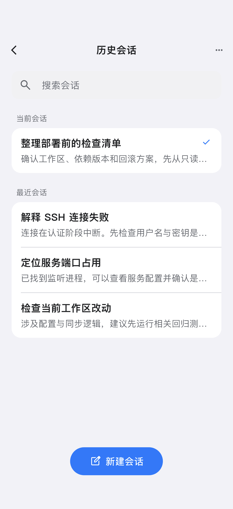
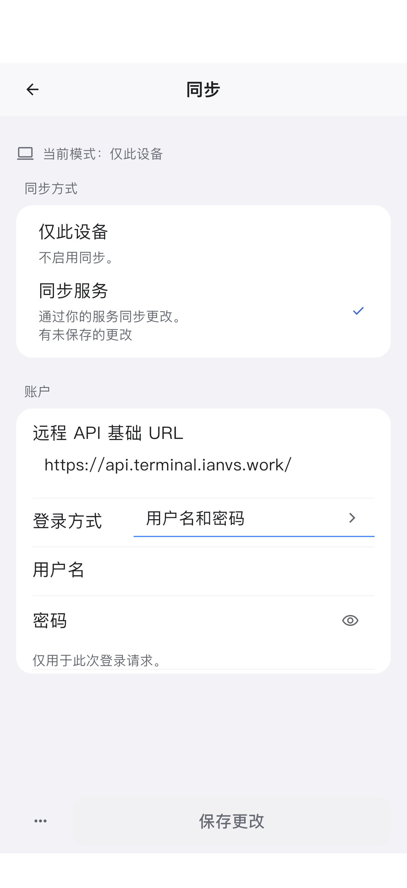
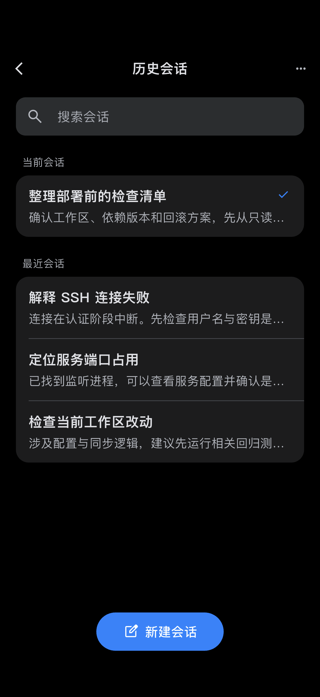
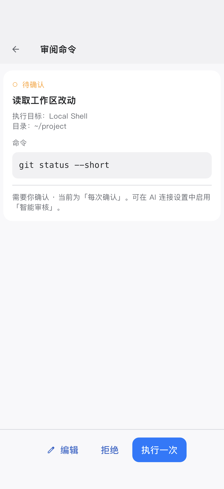
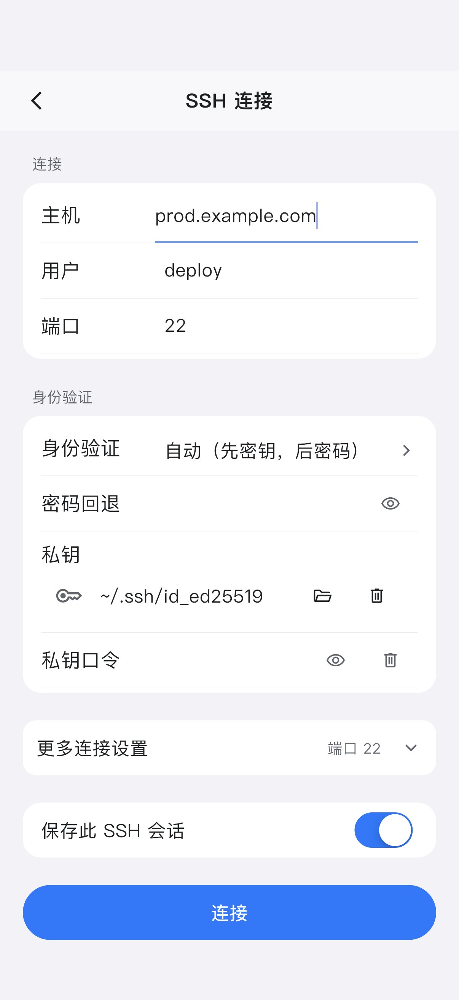

历史会话原设计稿实际实现 · 模拟器差异标注 · 实际截图12341 导航差异：保留现有全屏返回与管理入口；原稿为关闭式面板。2 当前会话独立分组；标题 17 / 摘要 15，保留选中标识。3 最近会话恢复同一白色分组；连续分隔线，移除独立卡片间距。4 新建会话为 48 pt 蓝色胶囊按钮。会话文案、条数使用测试数据。
AI 审批卡原设计稿实际实现 · 模拟器差异标注 · 实际截图12341 浅蓝用户气泡 / 白色回复，分组底色；角色保留语义标签。2 白色圆角卡：待确认 → 目的 → 目标和目录 → 命令 → 审核说明。3 完整命令可选取、滚动阅读，不以省略号替代。4 拒绝和审阅分离，审阅不执行。顶部保留现有任务状态栏；底部独立输入组件未深入改动。
SSH 连接原设计稿实际实现 · 模拟器差异标注 · 实际截图12341 主机、用户、端口恢复在连接分组内，常规行高至少 48 pt。2 验证字段共用无外框行样式。私钥保留独立一行和删除操作，较原稿多占一行。3 更多连接设置恢复白色分组，保留高级设置内容。4 保存为独立开关；连接为 48 pt 主按钮。测试状态为空密码，未伪造已保存凭据。
同步表单原设计稿实际实现 · 模拟器差异标注 · 实际截图1231 当前生效模式与编辑中的模式分开，未保存状态继续显示。2 模式 / 账户分组；长 API 地址独占一行；密码状态与原稿同类。3 密码模式保留“保存更改”；默认 Apple 模式显示 Apple 登录按钮。两种实际状态均附截图，未恢复旧的密码默认入口。
原生补充状态深色、完整命令审阅、键盘，以及默认 Apple 登录。点击查看原始尺寸。历史 · 深色完整命令审阅SSH · 键盘同步 · Apple 默认